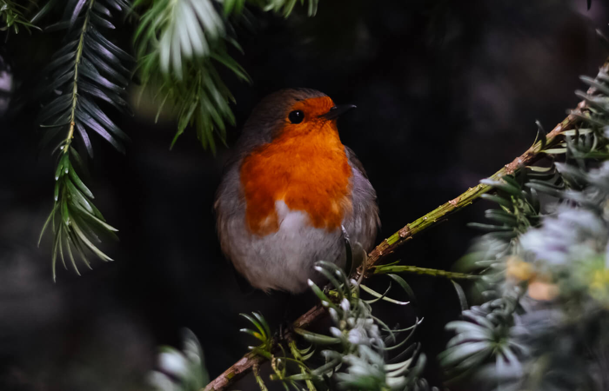

OUR TOURS
BIRDWATCHING AT PACAYA SAMIRIA
Pacaya-Samiria Amazon Lodge located a 120 km from the Iquitos City is one of the most exclusive lodges in the Peruvian Amazon and a heaven for visitors in search of a quiet retreat. From this unique place, our guests can visit the Pacaya-Samiria National Reserve, which is the largest protected natural area in Peru. There, visitors will also have the chance to observe exotic pink dolphin of the Amazon. Activities also include visits to the local communities, hikes in primary rainforest, observation of flora and fauna, birdwatching and many more. Also, the visit to the confluence of the Marañon and Ucayali rivers where the Amazonas River is born.
DAY 1: IQUITOS / LODGE
We start our adventure of the Peruvian forest at the Iquitos City Airport, from there we will transport in a modern and comfortable air-conditioned minivan traveling on a nice highway to the town of Nauta. Nauta was the first township founded by the Spanish at the Maranon River’s bank. The trip takes approximately 1.30 hours, a 97 km journey.
DAY 2: NAUTA CREEK /LODGE
At dawn, we will make a small hike through the forest around the lodge, searching for birds to observe, followed by breakfast back at the lodge. Immediately after, we make an excursion by boat around the Nauta Creek and the closest lakes, where we observe flora and fauna (monkeys, sloths and wide variety of aquatic birds) and other.
DAY 3: PACAYA SAMIRIA NATIONAL RESERVE / CAMPING
We will go on with our bird watching session very early this morning followed by breakfast at the lodge. Immediately after, we will go to the Pacaya Samiria National Reserve where we register our entry and then continue out journey into the reserve.
- Wednesday, February 10, 2021 to Friday, February 26, 2021.
- TOUR DURATION: 3 days - 2 nights
- TOUR PRICE: 6,850 USD
- SINGLE SUPPLEMENT: 1,170 USD
- TOUR STARTS/ENDS: Lima, Peru
- TOUR GUIDE: Ernesto Valqui
- NUMBER OF PERSONS LIMIT: 12
- Lots of high quality, exciting birding in relatively easy conditions.
- Amazingly high diversity in such a small area, in comfortable surroundings and protected areas.
- Expected 430+ bird species.
{kind=link}
{kind=link}
{kind=link}
{kind=link}
{kind=link}
{kind=link}

5 / 5
BIRDWATCHING AT RESERVA DEL MANU
Manu Biosphere Reserve is a sprawling national park in southeastern Peru, spanning Andean highlands, cloud forest and lowland jungle. It's known for its rich biodiversity, notably hundreds of bird species, including macaws, which feed at clay licks at sites such as Blanquillo...
Learn moreBIRDWATCHING AT SELVA VIRGEN

Birdwatching, or birding, is a form of wildlife observation in which the observation of birds is a recreational activity or citizen science. It can be done with the naked eye, through a visual enhancement device like binoculars and telescopes, by listening for bird sounds or by watching...
Learn more